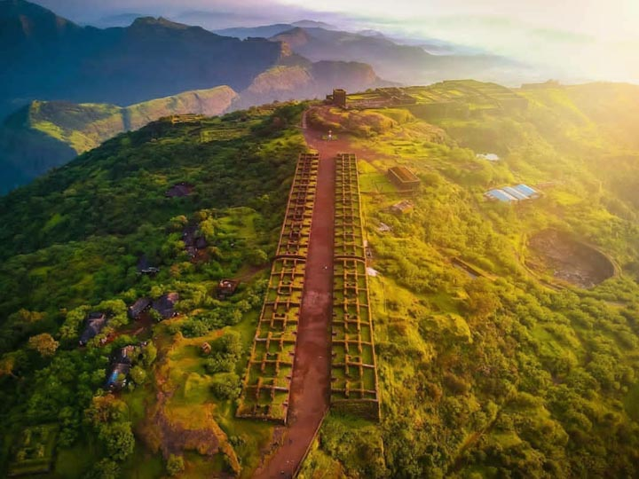
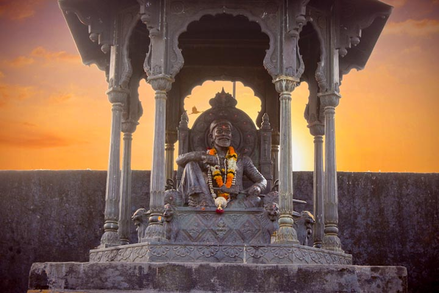
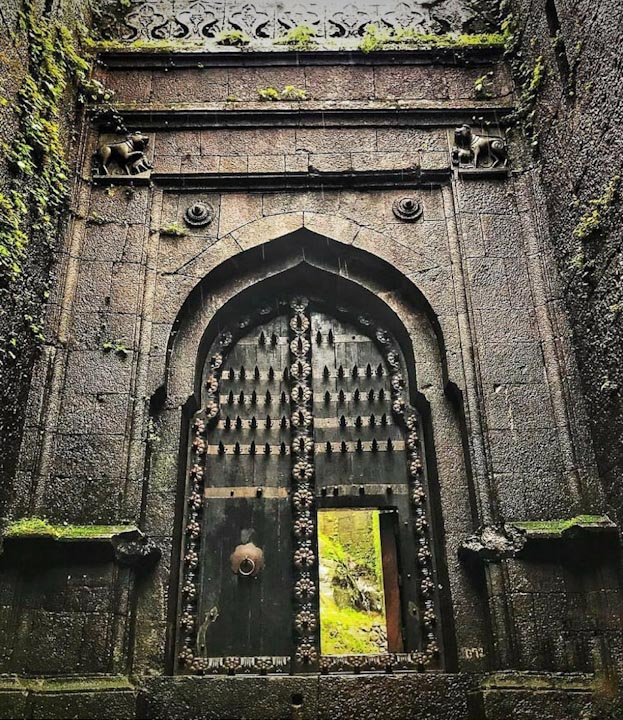

<div class="container-fluid">
  <div class="row">
    <div class="col-md-12">
      <div class="card bg-dark text-white">
        
        <div class="card-img-overlay">
          <h5 class="card-title-main">Welcome to Raigad</h5>
        </div>
      </div>

      <div class="p1 mt-3">
        <p>At a distance of 26 km from Mahad, 83 km from Mahabaleshwar, 105 km from Alibaug, 118 km from Lonavala, 136
          km from Mumbai, 138 km from Pune and 196 km
          from Ratnagiri, Raigad is a hill fort situated at Pachad near Mahad in Raigad district of Maharashtra. This is
          one of the most popular forts in Maharashtra
          and popular places for trekking near Mumbai. This fort is one of the prime places to visit on a Maharashtra
          tour and also one of the must include historical
          forts in Mahabaleshwar Tour Packages as well as in Lonavala Tour Packages.
        </p>
      </div>
      <div class="clearfix">
        
        <p>Earlier called as Rairi, Raigad was initially under the control of Chandrarao More of Jawali and was captured
          by Chhatrapati Shivaji Maharaj's in 1656 CE.
          After taking over the Rairi Fort, Shivaji Maharaj got it completely renovated and renamed it as Raigad (the
          King's Fort). Shivaji Maharaj made it his
          capital in 1674 CE when he was crowned as King. The fort was destroyed by the British in 1818 CE after they
          conquered it.
          Perched at an altitude of 2700 feet above sea level, Raigad Fort falls under the Sahyadri Mountain range of
          India.
          The fort is constructed on an irregular wedge-shaped mass of rock and is inaccessible from three sides. The
          main structures inside the Raigad Fort, which today stands mostly in ruins, comprise of
          Queen's Quarters, Public Durbar, Watch Towers, Darwajas, etc. The Queen's Quarters consist of six chambers,
          meant for the queen and her attendants.
          The main palace situated inside the fort was largely constructed out of wood. However, apart from its base,
          made up of pillars, hardly anything else
          remains right now.
          Ruins of three watch towers can be seen in front of the palace grounds overlooking an artificial lake called
          Ganga Sagar Lake created next to the fort.
          Now only two watchtowers are visible. Third watchtower collapsed in bombarding. It also has a view of the
          execution point called Takmak Tok,
          a cliff from where the sentenced prisoners were thrown to their death. The area is now fenced off. The fort
          also has ruins of the market.
          The Public Durbar of the king today houses a replica of the original throne. The main doorway of the durbar,
          known as the Nagarkhana Darwaja,
          faces the throne. The secondary entrance was called the Mena Darwaja and was meant to provide private entrance
          to the royal ladies of the fort.
          It ultimately leads to the Queen's Quarters. Holi Cha Mal, outside the Nagarkhana, is a wide open ground used
          for annual Holi festival.
          The main entrance of the Raigad Fort comprises of Maha Darwaja, which is colossal and provided protection to
          the fort.
        </p>
      </div>
      <div class="clearfix">
        
        <p>
          It has two huge bastions on both
          sides of the door which are approximately 65-70 feet high. The top of the fort is 600 feet higher from the
          entrance. Fort was having only one access
          route which goes through this Maha Darwaja. The three dark and deep chambers, situated to right of the Palkhi
          Darwaja, are believed to have served as
          the granaries of the fort.

          One of the main attractions of the Raigad Fort is a magnificent statue of Chhatrapati Shivaji, sited opposite
          the ruins of the main market avenue.
          The samadhi (tomb) of Shivaji and his dog Waghya are situated near the avenue. There are temples of Shirkai
          Bhavani, the presiding deity of the Fort
          and Jagadishwar inside the fort premises. A memorial to Jijabai, Shivaji's mother can be seen at base village
          of Pachad.

          There are approximately 1400-1450 steps leading to the fort, though today a rope-way exists to reach the top
          of the fort. Raigad fort is the only fort
          in Maharashtra which has a ropeway access. Trekking is still a popular activity to reach the fort. Raigad trek
          is a difficult trek and the approximate
          duration of the trek is about 1.5 - 2 hours. The base village for the Raigad trek up is Pachad. Raigad night
          trek is particularly popular especially
          during the summers.<br><br>

          Timings: 8 AM to 6 PM<br>

          Entry Fee: Rs. 10 for Indians & Rs. 100 for Foreigners<br>

          Ropeway Charges: Rs. 250 for Adults and Rs. 170 for Child.<br>

          Distance from Mahabaleshwar Bus Station: 85Kms<br><br>

          How to reach:<br>

          By Air: <br>
          The nearest airport is at Pune & Mumbai.<br><br>

          By Rail: <br>
          Trains arrive here from Pune, Mumbai, Ratnagiri and other cities.<br><br>

          By Road:<br>
          Private transport is more convenient if you would like to visit places around Raigad fort.<br><br>

          By Bus:<br>
          State-run and private bus services are available from many cities in Maharashtra and other states.<br>
        </p>
      </div>
      <div class="card mt-5">
        <h5 class="card-header">Hotels within 10kms</h5>
        <div class="card-body">
          <div class="row">
            <div class="col-sm-4">
              <div class="card">
                
                <div class="card-body">
                  <h5 class="card-title">Lavasa Holiday Home</h5>
                  <p class="card-text">Lavasa Holiday Home (2BHK) offers accommodation in Lavasa with views of
                    lake/mountain.
                    Guests benefit from balcony and a barbecue.
                    Free private parking is available on site.</p>
                  <a href="#" class="btn btn-primary">Book Room</a>
                </div>
              </div>
            </div>
            <div class="col-sm-4">
              <div class="card">
                
                <div class="card-body">
                  <h5 class="card-title">Lavasa Lake Palace</h5>
                  <p class="card-text">Boasting a restaurant and barbecue facilities, Lavasa Lake Palace features
                    accommodation in Lavasa with free WiFi and lake views.</p>
                  <a href="#" class="btn btn-primary">Book Room</a>
                </div>
              </div>
            </div>
            <div class="col-sm-4">
              <div class="card">
                
                <div class="card-body">
                  <h5 class="card-title">Lavasa Luxury Deck Apartment</h5>
                  <p class="card-text">Situated in Lavasa, Lavasa Luxury Deck Apartment features air-conditioned
                    accommodation with
                    a patio and views of the Sahyadri Hills and Dasve Lake.</p>
                  <a href="#" class="btn btn-primary">Book Room</a>
                </div>
              </div>
            </div>
            <div class="col-sm-4">
              <div class="card mt-3">
                
                <div class="card-body">
                  <h5 class="card-title">Lavasa Luxury Lakeview Studio</h5>
                  <p class="card-text">Lavasa Luxury Lakeview Studio is set in Lavasa.
                    This holiday home offers air-conditioned accommodation and views of the Sahyadri Range and Dasve
                    Lake.</p>
                  <a href="#" class="btn btn-primary">Book Room</a>
                </div>
              </div>
            </div>
            <div class="col-sm-4">
              <div class="card mt-3">
                
                <div class="card-body">
                  <h5 class="card-title">Hotel Deccan</h5>
                  <p class="card-text">
                    Featuring a restaurant, the 3-star resort has air-conditioned rooms with a private bathroom.
                    The accommodations provides a 24-hour front desk, room service and organizing tours for guests.</p>
                  <a href="#" class="btn btn-primary">Book Room</a>
                </div>
              </div>
            </div>
          </div>
        </div>
      </div>
    </div>
  </div>
</div>